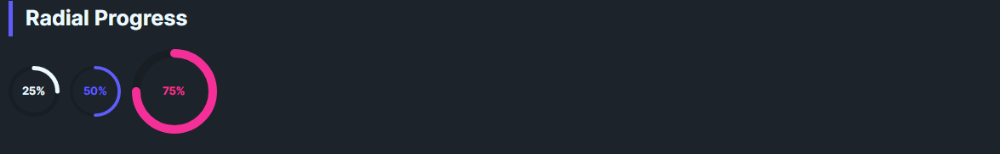

DaisyRadialProgress is a circular progress indicator with 8 color variants, 5 size presets, optional shimmer animation, and configurable stroke thickness. It converts the Minimum–Maximum range to a 0–360° sweep. Shows a percentage label by default with auto-sizing to ensure text fits within the circle.
Uses DaisyProgressVariant: Default, Primary, Secondary, Accent, Info, Success, Warning, Error (foreground changes).
The control uses design tokens for size-dependent dimensions. When ShowValue="True" (default), the control auto-sizes to fit the text content, treating Size as a minimum size. When text is hidden, Size is the exact diameter.
| Size | Min Diameter | Stroke Thickness | Label Font |
|---|---|---|---|
| ExtraSmall | 24 | 2 | 7 |
| Small | 32 | 3 | 9 |
| Medium (default) | 48 | 4 | 12 |
| Large | 96 | 6 | 20 |
| ExtraLarge | 128 | 8 | 28 |
| Property | Type | Default | Description |
|---|---|---|---|
Value |
double |
0 |
Current progress value (0–100 by default). |
Minimum |
double |
0 |
Minimum value of the range. |
Maximum |
double |
100 |
Maximum value of the range. |
Variant |
DaisyProgressVariant |
Default |
Color variant for the progress arc. |
Size |
DaisySize |
Medium |
Size preset (acts as minimum when ShowValue is true). |
Thickness |
double? |
null |
Stroke thickness (derived from Size if null). |
ShowValue |
bool |
true |
Whether to display the percentage label. |
Shimmer |
bool |
false |
Enables a subtle breathing opacity animation on the arc. |
<!-- Basic -->
<controls:DaisyRadialProgress Value="70" />
<!-- Themed and large -->
<controls:DaisyRadialProgress Value="30" Variant="Primary" />
<controls:DaisyRadialProgress Value="100" Variant="Accent" Size="Large" />
<!-- Custom thickness and range -->
<controls:DaisyRadialProgress Minimum="0" Maximum="250" Value="125" Thickness="6" />
<!-- No text (exact size) -->
<controls:DaisyRadialProgress Value="50" ShowValue="False" Size="Small" />
<!-- With Shimmer animation -->
<controls:DaisyRadialProgress Value="75" Variant="Primary" Shimmer="True" />
<controls:DaisyRadialProgress Value="85" Variant="Success" Shimmer="True" />DaisyRadialProgress includes built-in accessibility for screen readers via the AccessibleText property. The automation peer automatically announces the current percentage along with the accessible text.
| Property | Type | Default | Description |
|---|---|---|---|
AccessibleText |
string |
"Progress" |
Context text announced by screen readers (e.g., "Upload progress, 70%"). |
<!-- Default: announces "Progress, 70%" -->
<controls:DaisyRadialProgress Value="70" />
<!-- Contextual: announces "Upload progress, 30%" -->
<controls:DaisyRadialProgress Value="30" AccessibleText="Upload progress" Variant="Primary" />
<!-- Contextual: announces "Battery level, 100%" -->
<controls:DaisyRadialProgress Value="100" AccessibleText="Battery level" Variant="Success" Size="Large" />Minimum < Maximum; default is 0–100.ShowValue="True", the control auto-grows to fit text; Size sets the minimum diameter.ShowValue="False" for exact sizing without a label.Thickness as null to use size-appropriate design tokens; override only when needed.DaisyLoading variants instead; this control is determinate.AccessibleText to provide context about what the progress represents (e.g., "Storage used" or "Task completion").Shimmer="True" for active processes where you want subtle visual feedback that work is ongoing.